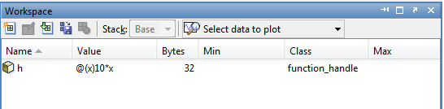
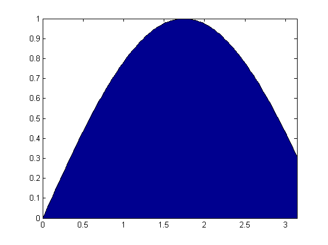
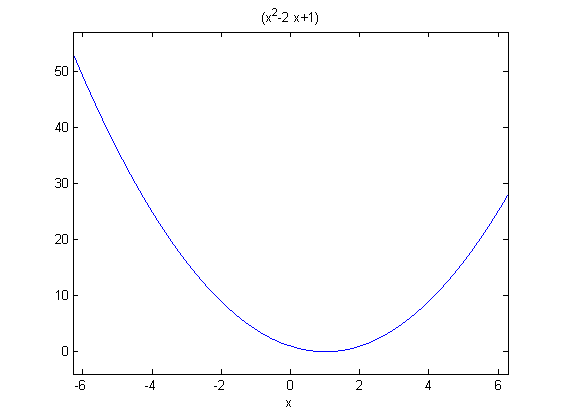
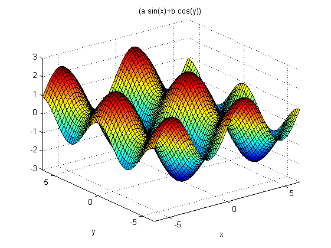

Fonksiyon tutucular ve anonim fonksiyonlar
Bu yazıda MATLAB kullanıcılarının çok bilmediği fonksiyon tutucular (function handle) ve anonim fonksiyonlara bakalım. İlk örneğimiz integral almak olsun ve şöyle basit bir fonksiyonumuz olsun:
$$h(x) = 10x$$
Bu fonksiyonun [1,10] aralığında integralini analitik olarak alalım:
\begin{align}\int_1^{10} h(x) \, dx &= 10 \frac{x^2}{2}\bigg|_{1}^{10}\\&= 500 - 5 \\&= 495\end{align}
Şimdi bunu MATLAB ile nasıl yapacağımıza bakalım. İlk olarak $h(x)$ fonksiyonunu anonim bir fonksiyon olarak yazalım:
h = @(x) 10*x;
Üstte girdi olarak x alan ve çıktı olarak 10*x döndüren bir anonim fonksiyon var. Bu anonim fonksiyonu h değişkenine atayarak h'yi bu fonksiyonu çağırmak için kullanabileceğiz. Çağırmayı deneyelim:
h(3)
ans =
30
Bunu yeni bir "h.m" dosyası yaratarak şöyle de yapabilirdik:
function y = h(x)
y = 10*x;
end
Bunun yerine tek satırda yaptık ve de yeni bir dosya yaratmaya gerek kalmadı. Diyebilirsiniz ki "neden doğrudan h = 10*x yazmadık?" Öyle yapsaydık, h fonksiyon tipinde değil de sayı tipinde olacaktı ve içinde nümerik değerler saklayacaktı. Biz ise ilerde bu fonksiyonu başka fonksiyonlara girdi olarak vereceğiz ve fonksiyona erişildiği an x'in değerleri ne ise ona bağımlı bir sonuç dönecek. Çalışma ortamına bakarsak değişkenin sınıfının function_handle olduğunu görebiliriz:

Şimdi bir fonksiyon daha düşünelim:
$$f(x) = \sin(\alpha x)$$
Bunu MATLAB'de tanımlayalım:
alpha = 0.9; f = @(x) sin(alpha*x);
ve $[0,\pi]$ aralığında alan olarak çizdirelim:
x = linspace(0,pi,100); area(x,f(x))

Çizdiğimiz alan ne kadar acaba? Sayısal olarak integral hesaplamaya yarayan quad
fonksiyonuna tanımladığımız fonksiyonu ve sınırları vererek bunu hesaplayabiliriz.
quad(f,0,pi)
ans =
2.1678
Yani $\int_0^\pi sin(0.9 x) \approx 2.1678$ imiş. İlk örnekteki h fonksiyonunu kullanarak quad(h,1,10) yazarsanız 495 değerini göreceksiniz. Elle hesapladığımız değerle aynı.
Şimdi de integral dışında bir örneğe bakalım. Yeni problemimiz bir eniyileme problemi: Belli bir aralıktaki en küçük değeri istiyoruz. Fonksiyonumuz şöyle olsun:
$$f(x) = x^2 - 2x + 1$$
Yani MATLAB diliyle konuşursak:
f = @(x) (x.^2 * 2*x + 1); ezplot(f)

Şimdi fminbnd fonksiyonu ile belli bir aralıktaki en küçük değeri veren x'i bulalım ve grafikte yıldız işaretiyle onu da gösterelim:
hold on minimum = fminbnd(f, -2, 2); plot(minimum, f(minimum), '*') hold off
Bir eğrinin üstündeki minimum nokta nasıl bulunur sorusunu fonksiyon tutucu kullanarak cevaplamış olduk. Kendi yazdığımız bir fonksiyon yerine doğrudan MATLAB'ın fonksiyonları için de buna bakabilirdik. Örneğin fminbnd(@sin,0,2*pi) ile sin fonksiyonunun en düşük değerini veren açıyı radyan cinsinden bulabiliriz. Dikkat etmeniz gereken şey fminbnd'ye ilk parametre olarak bir fonksiyon tutucu yollamak. Doğrudan sin yazarsanız hata verecektir.
Şimdi iki boyutta nasıl kullanabileceğimize bakalım. İki değişkenli bir fonksiyon tanımlayalım ve çizelim:
a = 1.4; b = 0.9; f = @(x,y) (a*sin(x) + b*cos(y)); ezsurf(f)

Görüldüğü üzere anonim fonksiyonları tek bir girdi parametresi ile değil, birden çok girdi ile kullanabiliyoruz.
Yazıyı uzatmak mümkün ama temel bilgiyi içerdiğini düşünüyorum ve burada bırakıyorum. Konu ile ilgili daha ayrıntılı görsel bilgiye Açık Ders'ten ulaşabilirsiniz.


4 yorum
Merhabalar ,
Tezimle uğraşırken Matlab'dan da faydalanıyorum.
Şöyle bir sorunla karşılaştım;
% Üçgen dalga fonksiyonu
ftri_1=@(t) (Vtm*(t-(t1+Tx))/t1+Vtm); % Yükselen kısmı
ftri_2=@(t) (-(Vtm/t1)*(t-t1-Tx)); % Düşen kısmı
isRefBigger=fsin(loopCount)...-ftri_2(loopCount);
-(-(Vtm/t1)*(loopCount-t1-Tx));
Bu şekilde yazınca sonuçlar doğru bir şekilde elde ediliyor
isRefBigger=fsin(loopCount)-ftri_2(loopCount); Bu şekilde yazınca sonuçlar hatalı hesaplanıyor.
Şöyle benzer bir kısım daha var kodumda;
isRefBigger=fsin(loopCount)-ftri_1(loopCount); burası sağlıklı bir şekilde çalışıyor.
Toplamda 5 adet anonim fonksiyon tanımladım aceba Matlab aynı m-file içinde en fazla 4 anonim fonksiyona izin veriyor olabilir mi?
@Nazım MATLAB'de anonim fonksiyonlar için bir limit yok. Bunu şöyle bir fonksiyon ile test edebilirsiniz:
function y = test(x) f0 = @(a) 1; f1 = @(a) a; f2 = @(a) a.^2; f3 = @(a) a.^3; f4 = @(a) a.^4; f5 = @(a) a.^5; y = f0(x) + f1(x) + f2(x) + f3(x) + f4(x) + f5(x); endKomut satırından
test(2)'yi çağırırsanız cevap63çıkacaktır. Probleminiz başka bir sebepten kaynaklanıyor olmalı.Merhabalar tekrar,
Yukarıda belirttiğim sorunumu çözdüm.
Kodum :
clear , clc
k=1000; %kilo
M=k*1000; %Mega
ma=1.5; %ma=Vref/Vcarry
%sinus params
Vsm=5; %ma=1 V1=ma*Vdc
fs=50;
Ts=1/fs;
Ts=Ts*M;
%triangular params
Vtm=ma*Vsm;
ft=2*k;
Tt=1/ft;
Tt=Tt*M; %u mertebesini attık simdilik sinus içinde aynısı yapılcak.
t1=Tt/2;
%%-----------------------
loopFinish=Ts/2;
Tx=0;
%Duty Parametreleri
turnOffTime=0;
turnOnTime=0;
arraySquare(1,1)=0;
arrayCount=1;
% Birim basamak fonksiyonları tanımlanıyor.(Üçgen dalga için)
u_rise = @(t,Tshift) t1-t+Tshift;
u_fall = @(t,Tshift) t-Tshift-t1;
% Üçgen dalga fonksiyonu
ftri_rise=@(t,Tshifter) (Vtm*(t-(t1+Tshifter))/t1+Vtm); % Yükselen kısmı
ftri_fall=@(t,Tshifter) (-Vtm*(t-(t1+Tshifter))/t1+Vtm); % Düşen kısmı
% ftri_2=@(t) ((t-Tx-t1)/(t1-Tt))*Vtm+Vtm;
% Sinus dalgası fonksiyonu
fsin=@(t) Vsm*sin(2*pi*t/Ts);
for loopCount=0:0.1:loopFinish
% loopCount dediğim t(zaman)Finish
if u_rise(loopCount,Tx) >= 0
isRefBigger=fsin(loopCount)-ftri_rise(loopCount,Tx);
%Timer degerleri
if isRefBigger > 0
turnOnTime=turnOnTime+0.1;
if turnOffTime~=0
arraySquare(1,arrayCount)=turnOffTime;
turnOffTime=0;
arrayCount=arrayCount+1;
end
else
turnOffTime=turnOffTime+0.1;
if turnOnTime~=0
arraySquare(1,arrayCount)=turnOnTime;
turnOnTime=0;
arrayCount=arrayCount+1;
end
end
elseif u_fall(loopCount,Tx) >= 0
isRefBigger=fsin(loopCount)-ftri_fall(loopCount,Tx);
%Timer degerleri
if isRefBigger > 0
turnOnTime=turnOnTime+0.1;
if turnOffTime~=0
arraySquare(1,arrayCount)=turnOffTime;
turnOffTime=0;
arrayCount=arrayCount+1;
end
else
turnOffTime=turnOffTime+0.1;
if turnOnTime~=0
arraySquare(1,arrayCount)=turnOnTime;
turnOnTime=0;
arrayCount=arrayCount+1;
end
end
end
x=mod(loopCount,Tt);
if loopCount~=0
if x == 0
Tx=Tx+Tt;
end
end
end
altaGecme=5;
boyInverter=length(arraySquare)+1;
islem=fopen('C:UserspcDropboxTezMatlabtimerDegerleri.txt','w');
fprintf(islem,'const u16 inverter[%u]',length(arraySquare)+1);
fprintf(islem,'={rn');
for count=1:boyInverter;
xmod=mod(count,altaGecme);
if (xmod~=0) && (count~=boyInverter)
fprintf(islem,'%4u , ',arraySquare(count));
elseif (xmod==0) && (count~=boyInverter)
fprintf(islem,'rn%4u , ',arraySquare(count));
else
fprintf(islem,'%4u rn}',arraySquare(2));
end
end
fclose(islem);
En altta hesapladığım değerleri txt dosyasına yazdırıyorum fakat istediğim formatta yazmıyor.
Şöyle yazıyor :
const u16 inverter[40]={
4.753000e+002 , 5.220000e+001 , 4.235000e+002 , 1.032000e+002 ,
3.736000e+002 , 1.516000e+002 , 3.267000e+002 , 1.962000e+002 , 2.842000e+002 ,
2.358000e+002 , 2.470000e+002 , 2.697000e+002 , 2.161000e+002 , 2.969000e+002 ,
1.923000e+002 , 3.167000e+002 , 1.760000e+002 , 3.288000e+002 , 1.678000e+002 ,
3.329000e+002 , 1.678000e+002 , 3.288000e+002 , 1.760000e+002 , 3.167000e+002 ,
1.923000e+002 , 2.969000e+002 , 2.161000e+002 , 2.697000e+002 , 2.470000e+002 ,
2.358000e+002 , 2.842000e+002 , 1.962000e+002 , 3.267000e+002 , 1.516000e+002 ,
3.736000e+002 , 1.032000e+002 , 4.235000e+002 , 5.220000e+001 , 4.752000e+002 , 5.220000e+001
}
Ben e+00 ları gormek istemiyorum. Mesela 1.terim için 475.3 yazmalı bunu nasıl ayarlayabilirim?
Mikrodenetleyiciye bu değerleri direk atıcamda kolaylık olması açısından böyle birşey yapayım dedim ama bu e+00 lar işi bozuyor :)
Merhabalar, bir önceki sorumu sormakta biraz acele etmişim :)
İstediğim şekilde yazdırdım. Buraya bakacak olan arkadaşların işine yarayabilir belki diye düzeltilmiş halini ekliyorum :
for count=1:boyInverter;
xmod=mod(count,altaGecme);
if (xmod~=0) && (count~=boyInverter)
fprintf(islem,'%4.2f , ',arraySquare(count));
elseif (xmod==0) && (count~=boyInverter)
fprintf(islem,'rn%4.2f , ',arraySquare(count));
else
if xmod==0
fprintf(islem,'rn%4.2f',arraySquare(2));
fprintf(islem,'rn}');
else
fprintf(islem,'%4.2f rn}',arraySquare(2));
end
end
end
İyi çalışmalar.